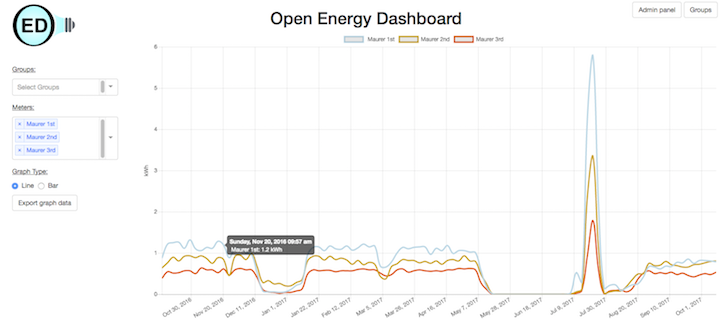
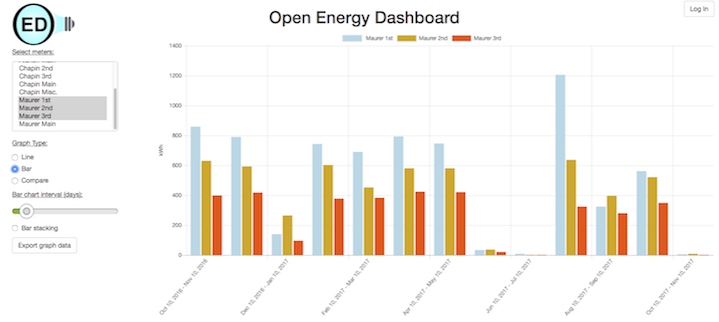
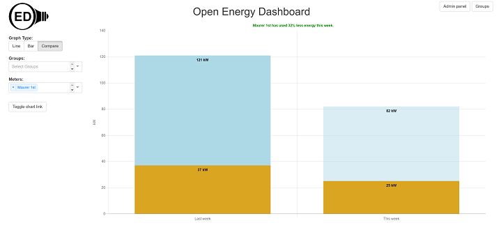
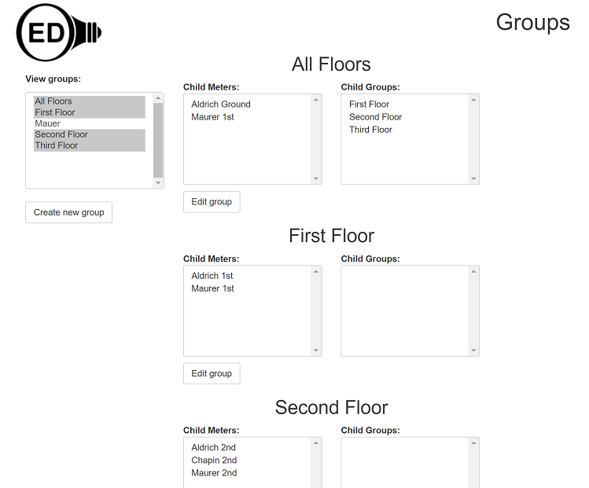
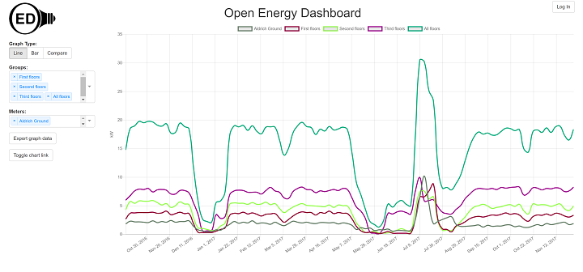
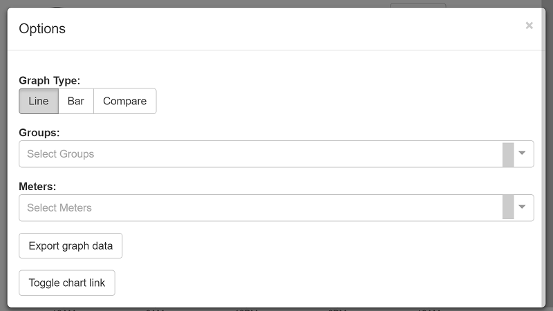

--- 
layout: default 
title: OED features 
---
<div> 
	<h1>Features of the Open Energy Dashboard</h1>
	<p>
		The OED system has a number of features. This page highlights some of
		the more important ones. A nice way to see many of these features is
		to try looking at our released/production system at
		 <a href="http://oed.beloit.edu/beloit" target="_blank" rel="noopener noreferrer">production system</a> 
		 or you can look at our demo system that has features that are almost ready 
		 for production release at
		<a href="http://oed.beloit.edu:3020" target="_blank" rel="noopener noreferrer"> demo system</a>.
	We also have a development system with features that are being prepared for release. People interested in seeing these features and providing feedback should contact the project.</p>
	<h2>Graphical display of data</h2>
	<p>
		The OED system can display the energy data it has acquired. You can
		choose what meter(s) and/or site defined group(s) that you want to
		graph. Currently the data can be displayed as a line or bar chart 
		where you can select the time duration represented by each bar.<br>
		<br> 
	</p>
	<p>The system can also show comparison of current usage over a
		specified period of time to the past. When you are only part way
		through a time period, e.g., one week, then an estimate is given of
		expected usage for the whole time period based on usage to
		date. This is under development and currently compares the current week to the
		previous week.<br>
		<br>
	<h2>Groups</h2>
	<p>The OED system allows a site to define any arbitrary combination
		of meters or other groups and save this by an administrator of the system.
		For example, you might have three floors in a building named DormOne
		with each one having a (sub)meter. You could create a group named
		Dorm1 and select these three meters to include in this group. If you
		now select Dorm1 to graph you would see the total energy used by these
		three meters as a single line or bar. Suppose you do the same thing
		for DormTwo which has four meters. Graphing Dorm2 would show the total
		for these four meters. You could also select to graph Dorm1 and Dorm2
		at the same time and that would show two lines/bars where each showed the total usage for one dorm.</p>
	<p>Groups can also be used the same as meters. Let's assume you have
		a total of three dorms where Dorm3 only has a single floor with a
		meter named meterDorm3. You could create another group and name it
		AllDorms where you place the groups Dorm1 and Dorm2 and the meter
		meterDorm3 into this group. Now, if you graph AllDorms you see the
		total energy for these three dorms. You could also graph Dorm1, Dorm2,
		meterDorm3 and AllDorms on a single graph to see the usage level of
		each dorm along with the total for all the dorms.</p>
	<p>This system is very general. Thus, you can create a group of all
		the first floor meters if you wanted. If you then combined this with
		the AllDorms group you would be including the first floor meters two
		times. Don't worry, the system will automatically figure this out and
		only count each unique meter.</p>
	<p>There are many requests for meter groupings that this addresses
		(it should do them all). For example, you could have a group for
		renewable energy, food service energy, athletic energy, etc. You can
		then combine them to get all residential usage or the entire campus
		usage. The difference in OED is that you can decide, create, and use 
		any grouping of meters at any time so it is all under your control. 
		This means you don't need to ask OED to do what you want. The flexibility 
		is built into the system.</p>
		<p>OED allows for creation, editing and deletion of groups.</p>
		<p>Here is the system editing groups where you can see there are three types of floors
		(first, second and third). The figure shows the members of the first and second floors containing
		meters and the three floor (first, second and third) groups combined
		to form a new group of all the floors in all three buildings:<br>
		<br>
		Here is a graph combining the three floors (first, second and third) groups and all floor group
		 with the Aldrich Ground meter. This was needed since the ground floor is not
		 included in the other three floors. This also demonstrates you can graph any
		 arbitrary combination of groups and meters:<br>
		</p>
	<h2>Import/export of data</h2>
	<p>We are committed to making our system open. That goes beyond
		just the software to the information inside of our system. Thus, you
		can export the data represented on any graph as a CSV file (a
		non-proprietary file similar to a spreadsheet and readable by all
		spreadsheet programs). If you want all the data then you can simply
		graph a wide range of dates to get that. We have worked hard to make the graphing system fast and responsive so graphing large date ranges with lots of meters will not be an issue. We feel this is a nice
		feature since you can look at the data visually before you decide to
		export it. This will allow you to do your own analysis of the data or
		import it into other systems. The figures above show the button to 
		click to export the graph data.</p>
	<p>We also support import of data into our system. You can create a
		CSV file (can use a standard spreadsheet program to do this) with one
		column as the data/time and another with the energy reading. You can
		then import that file into the system via a web page on the OED
		system. The data will now be available in the same way as if it was
		read from a meter. You can import data for a meter that is not
		automatically read or to add missing data from a meter already in the
		system. This has been used to bring in historical data before the
		system was in place.</p>
	<p>We can read in certain types of data from Johnson Control's
		Metasys export. This allows you to transfer information from that
		system into our system. This is somewhat trickier than a straight CSV
		file since the data may be the energy usage from the previous reading,
		cumulative and/or reset at midnight. If you have data from another
		system then please contact us as we are willing to try to import it
		into our system. Also, since this is an open source project, either
		you or another vendor could create the software to do this.</p>
	<h2>Support of lots of devices</h2>
	<p>OED is built on a modern framework of software that
		automatically adjusts to the screen resolution. Thus, menus will
		adjust size and ultimately become dropdown as the screen size (really
		the browser window) gets smaller. This means the system will work on
		everything from a large monitor to a tablet to a cell phone. We are working to make 
		this even more responsive, 
		but here is a screen shot on a lower end smart phone with 480x800 pixel 
		resolution:<br>
		<br>
		and if you click on the options button a menu will appear (this would be visible
		on a higher resolution screen as shown in the images above):
		</p>
	<h2>Other features</h2>
	There are other features that we mention here. Please let us know if
	you want more details on them.
	<ul>
		<li>Automatic meter reading. OED can probe meters to get the
			energy data. At the current time we can only do this for MAMAC meters
			for electrical usage but are interested in expanding this list. We
			are about to expand the system to read other types of energy usage
			such as steam, gas, etc. If you want to help or have specific types
			of meters in mind then let us know. We are certainly interested in
			BACnet and Modbus.</li>
		<li>Integration with Tableau. Some sites use Tableau for data
			analysis. Instead of having to export OED data and then importing
			into Tableau, we have been able to configure Tableau to directly read
			the OED data. This means you get the latest data inside Tableau
			without having to update.</li>
	</ul>
	<h2>Planned enhancements</h2>
	<p>
		There are many features that are planned in the coming months and in
		the longer-term. Please visit the <a href="plans.html">release page</a> for more information.
	</p>
</div>
